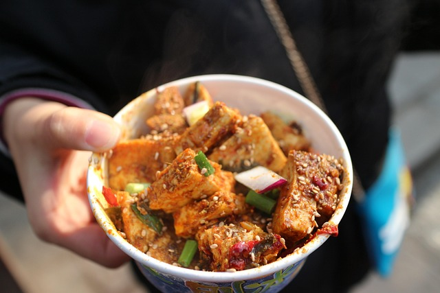

Beans with Tofu

Image by xay from Pixabay
I use it as a stock
Description
This is the simplest dish in the world.
I 'created' it while I was suffering from depression and a low income.
Once the depression got better and I wasn't broke anymore the dish was easily upgradeable!
Ingredients
- Spices
- Salt
- Pepper
- Chilli powder
- Other
- Garlic 2-4 Gloves
- Red Onion 1
- Tofu 1 Block (1/2 if money is tight)
- kidneybeans 1 Can
Steps
- Cut the onion and garlic.
- Dice the Tofu
- Heat oil in a pan.
- Add Onions.
- Add Tofu
- Add Garlic
- Add the kidneybeans with a bit of the liquid
of the can so the garlic doesn't burn.
- Cook untill done. Add spices.
Home